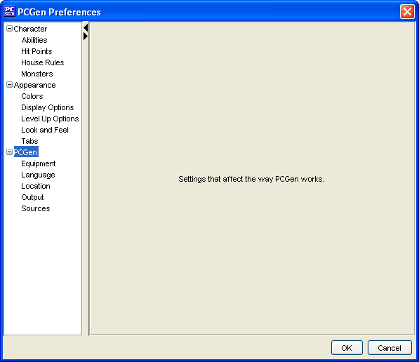

PCGen Menu Options

The
PCGen
options allow the user to select
different types of options that change the way PCGen behaves. It
can be used to auto generate equipment, set character directories
and more.
It can be used to adjust:
-
The
Equipment
option will allow you to set
many options to do with the gear that is listed in PCGen.
-
The
Language
option, allows you to select
different languages for PCGen.
-
The
Location
option allows you to set the
storage locations of PCGen files.
-
The
Output
option allows the user to select
default output options.
-
The
Sources
option allows the user to define
when to load the sources and other source related options.